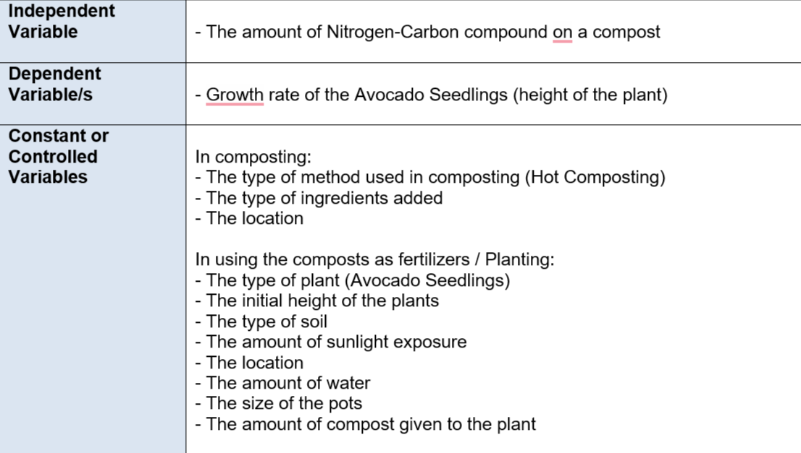
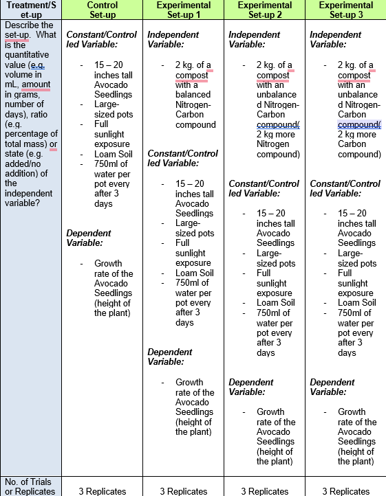
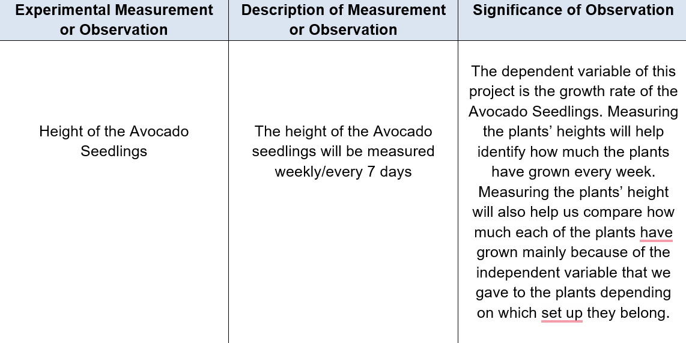
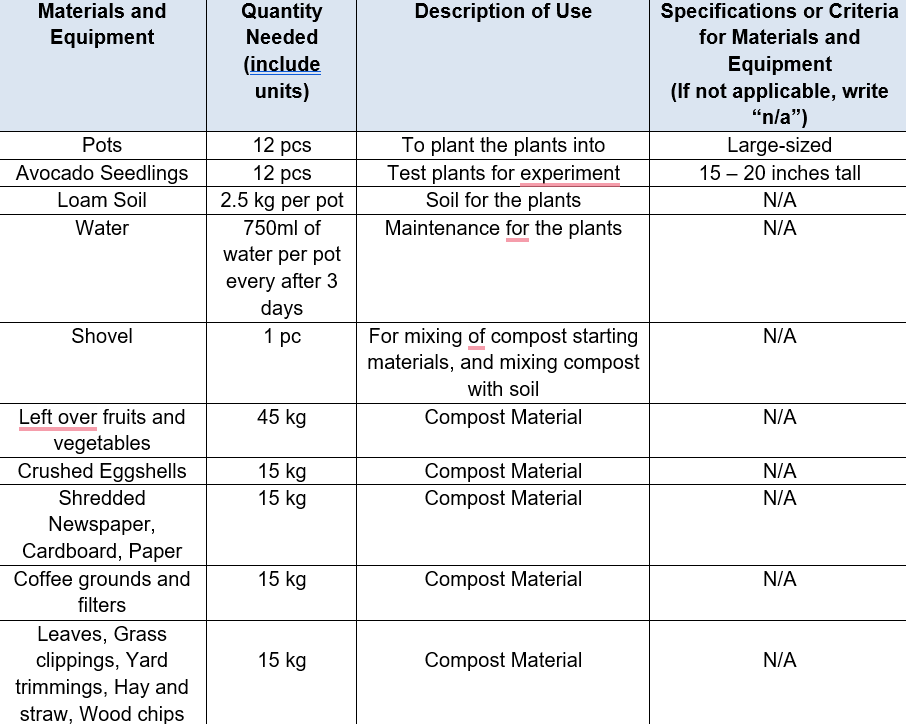
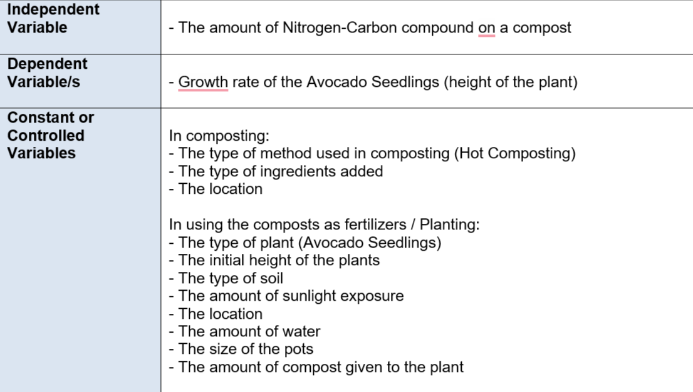
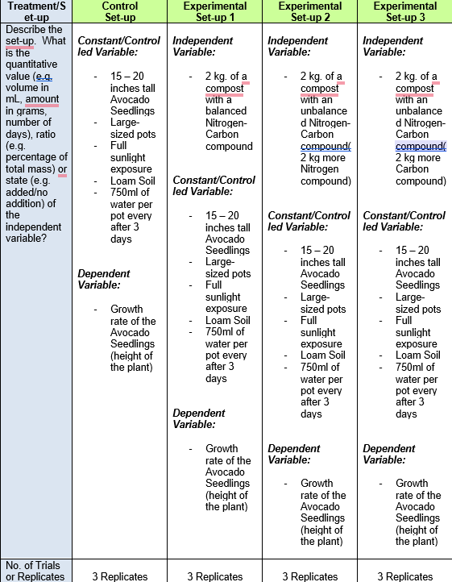
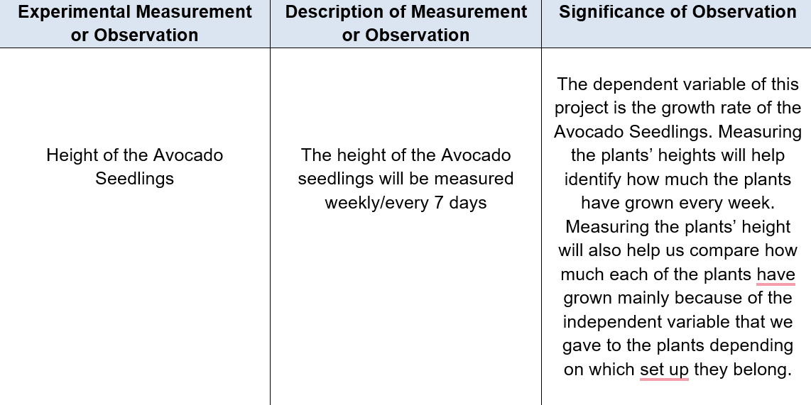
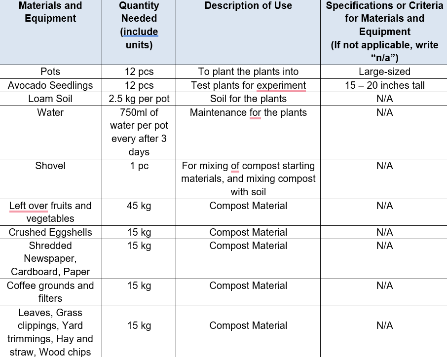

BIBLIOGRAPHY
ABOUT THE WEB DESIGNER

She is optimistic, responsible, hard-working, sincere, and above all, a person of strong character. Rather than making her weaker, her failures and challenges in life makes her stronger. She's someone who will always look for the positive side of any negative situation. She may have flaws, in fact, alot of them, but she is really really working hard on improving those flaws. She is Jillianne Anunciado.
CONTACT US!


SCROLL TO TOP
I. INTRODUCTION
A. BACKGROUND AND SIGNIFICANCE OF THE STUDY
In the internet, many research claims that in composting, the ideal balanced Carbon to Nitrogen (C/N) ratio should be of around 25 - 30:1 where 25 - 30 grams of Carbon should be added for each 1 gram of Nitrogen, stating that if the compost has too much carbon compound, it will be drier and longer to break down, and on the other hand, if the compost has too much nitrogen compound, it will end up creating a slimy, and smelly compost. As we all know, composting is one way of ‘recycling’ organic wastes in order for it to be used as a kind of fertilizer for plants. In this study, we are trying to find out if indeed having an unbalanced Carbon-Nitrogen compound in a compost, besides its negative effect during the decomposing of the compost, would affect the growth of a plant if it’s being used as a fertilizer. Understanding if having an ‘unbalanced’ Carbon- Nitrogen compound on a compost would negatively affect the growth/overall health of a plant, is very important for we believe if in some situation, one accidentally produces a compost with an ‘unbalanced’ Carbon-Nitrogen compound, knowing that the presence of the ‘unbalanced’ compounds may affect or may not affect the growth and the overall health of the plant helps them to decide whether or not to pursue giving the compost to their plants.
B. STATEMENT OF THE PROBLEM
How will a compost, with an unbalanced Nitrogen-Carbon compound, affect the growth of a Avocado seedling(Persea Americana)?
C. HYPOTHESIS
IF an Avocado seedling is given a compost, with an unbalanced Nitrogen-Carbon compound as a fertilizer, THEN the Avocado seedling would still grow as fast as if it’s being given a compost with a balanced Nitrogen-Carbon compound as its fertilizer.
D. REVIEW OF RELATED LITERATUE
According to Akratos & Vayenas (2017), the right Carbon-Nitrogen ratio of a compost is of around
25 - 30:1 where 25 - 30 grams of Carbon should be added for each 1 gram of Nitrogen, stating
that if the compost has too much carbon compound, it will be drier and longer to break down, and
on the other hand, if the compost has too much nitrogen compound, it will end up creating a
slimy, and smelly compost. Indeed having an unbalanced Nitrogen-Carbon ratio on a compost
would greatly negatively affect the compost itself in various ways(composting duration,
appearance, and texture), but will it negatively affect a growth of a plant too if used as a
fertilizer(considering that it attains an unbalanced Nitrogen-Carbon compound)?
In this study, we are claiming that despite the fact that the compost given to the plant has an
‘unbalanced’ Nitrogen & Carbon compound, its effects on the plant as a fertilizer would still be as
effective as a compost with a ‘balanced’ Nitrogen-Carbon compound and it would not affect the
plant in any way negatively, for having an ‘unbalanced’ Nitrogen & Carbon in a compost would
only affect the compost itself, specifically, on its composting duration, appearance, and texture.
II. METHODOLOGY
A. VARIABLES

B. TREATMENTS/SET-UP

C. EXPERIMENTAL DATA TO BE MEASURED OR OBSERVED

D. MATERIALS AND EQUIPMENT NEEDED

E. PROCEDURES FOR TESTING AND GATHERING/OBTAINING DATA

III. BIBLIOGRAPHY
A. VARIABLES
B. TREATMENTS/SET-UP
C. EXPERIMENTAL DATA TO BE MEASURED OR OBSERVED
D. MATERIALS AND EQUIPMENT NEEDED
E. PROCEDURES FOR TESTING AND GATHERING/OBTAINING DATA
III. BIBLIOGRAPHY
Akratos, C., & Vayenas, D. (2017). Cocomposting of olive mill waste for the production of
soil amendments. Science Direct. https://www.sciencedirect.com/topics/agricultural-and-biological-sciences/carbon-to-nitrogen-
ratio#:~:text=The%20carbon%20to%20nitrogen%20(C,N%20ratios%20enhance%20nitro
gen%20loss.
- Our SIP is focused on experimenting whether different amounts of Carbon-Nitrogen
compound on a compost would affect a growth of a plant. This website highlights the right
Carbon-Nitrogen ratio in composting, thus, this website especially helps us in determining the
different ratios of Carbon-Nitrogen compound we should experiment on.
Hu, S. (2020, July 20). Composting 101. NRDC. https://www.nrdc.org/stories/composting-101
- This website highlights ‘what is composting’ and its benefits. Since our SIP is focused on
composting, the information from this website really helps us to understand composting more.
Freudenrich, C., & Geisler, K. (2022, August 1). How Composting Works. How Stuff
Works. https://home.howstuffworks.com/composting.htm
- This website highlights ‘how-to’ compost. Since our SIP is focused on composting, the
information from this website really helps us to understand and learn composting for our
experimentation.
Dammann’s Garden Company. (2020, August 31). The Science of Composting: What
really happens. https://www.dammannsgardenco.com/blog/the-science-of-composting
- This website highlights the Science behind Composting, thus, the information this website
attains is relevant to our SIP and is very important especially that we are experimenting on the
ratio of the Carbon-Nitrogen compound in our compost.
Vanderlinden, C., & Miller, K. (2022, March 23). Hot Composting: How to Make Compost
in Less Time. The Spruce. https://www.thespruce.com/how-to-hot-compost-2539474
- This website highlights all the ropes around Hot Composting. The information this website
attains is also very relevant and important in our SIP for we will be using this specific method
of composting in our study.
Washington State University. (n.d.). Compost Fundamentals: Compost Needs.
http://whatcom.wsu.edu/ag/compost/fundamentals/needs_carbon_nitrogen.htm
- Our SIP is focused on experimenting whether different amounts of Carbon-Nitrogen
compound on a compost would affect a growth of a plant. This website highlights the right
Carbon-Nitrogen ratio in composting, thus, this website especially helps us in determining the
different ratios of Carbon-Nitrogen compound we should experiment on.
US Environmental Protection Agency. (n.d.). Composting at Home.
https://www.epa.gov/recycle/composting-home
- This website highlights ‘what is composting’ and its benefits. Since our SIP is focused on
composting, the information from this website really helps us to understand composting more.